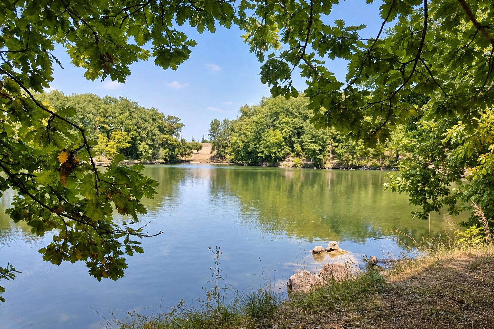
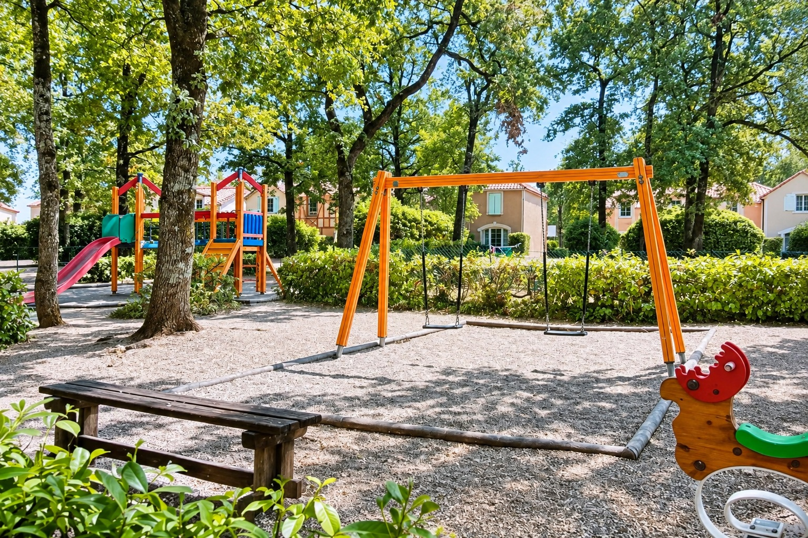

Journées piscine et
balades au bord du lac
Monflanquin, France
Détendez-vous au bord de la piscine commune en saison, marchez autour du lac Coulon et profitez des espaces extérieurs de la résidence.
Ouverture saisonnière
Piscine commune
Pêche avec permis
Pétanque
Tennis de table
Aire de jeux

Piscine commune en saison
La résidence dispose d’une piscine extérieure commune. Les périodes d’ouverture peuvent changer : vérifiez toujours les informations à jour sur Airbnb ou auprès de l’hôte.
Lac Coulon
Le lac de 2,5 hectares est aménagé pour la promenade et propose un parcours de pêche famille. L’accès à la pêche nécessite une carte et suit la réglementation en vigueur.

De la place pour jouer
L’aire de jeux et les espaces extérieurs permettent aux enfants de se dépenser tout en restant dans le cadre de la résidence.
UNE JOURNÉE DEHORS
Du premier café à la promenade du soir
Les activités les plus agréables sont celles que l’on peut choisir au dernier moment, selon la météo et l’envie.
01
Commencer doucement
Prenez le petit déjeuner sur la terrasse avant de partir marcher sous les arbres autour du lac.
02
Profiter de la piscine
Lorsqu’elle est ouverte, la piscine commune offre une pause rafraîchissante sans avoir à prendre la voiture.
03
Jouer ou pique-niquer
L’aire de jeux, les bancs et les espaces de pique-nique autour du lac facilitent une après-midi simple en famille.
04
Revenir par le lac
Terminez la journée par une promenade tranquille et retrouvez la terrasse pour le dîner.
AUTOUR DU LAC COULON
Un espace de nature accessible toute l’année
Le site touristique officiel présente le lac comme un parcours de pêche famille de 2,5 hectares, avec sentier, bancs, aire de pique-nique, jeux pour enfants, toilettes et accès poussettes.
PROMENADE
Promenade et pauses au bord de l’eau
Le tour du lac est une sortie facile pour prendre l’air. Les équipements publics et leur disponibilité peuvent évoluer selon la saison.
PÊCHE
Pêche réglementée
La pêche est possible pendant la saison autorisée avec une carte valide. Vérifiez toujours les règles et tarifs locaux avant de vous installer.
AUTRE LIEU DE BAIGNADE
Piscine municipale de Monflanquin
En complément de la piscine de la résidence, Monflanquin possède une piscine municipale d’été. Les horaires et dates sont publiés par l’office de tourisme.
ENCORE PLUS DEHORS
Des activités simples, juste à côté
Composez la journée en fonction des âges, de la météo et du rythme de chacun.
Pétanque
Profitez des espaces communs pour une partie détendue.
Tennis de table
Une activité facile à partager entre deux sorties.
Aire de jeux
Un espace prévu pour les plus jeunes dans la résidence.
Pêche et nature
Observez le lac ou pêchez avec la carte et les autorisations nécessaires.
Le plein air fait partie du séjour
Vérifiez les dates d’ouverture de la piscine commune et les conditions de pêche avant votre arrivée.